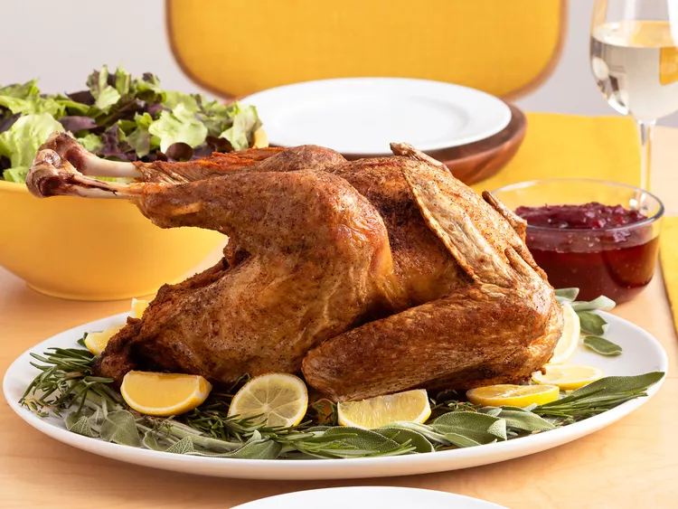

Deep Fried Turkey

Description
Learn how to deep-fry turkey for Thanksgiving without all the fuss. This deep-fried turkey recipe is simple — no
injecting, no marinades, no complicated rubs. If you like a more traditional tasting turkey, this is the one for
you!
Ingredients:
- Cooking oil
- 10 pound turkey
- Seasoning
Steps:
- Make sure your stockpot or fryer is located outdoors in a safe area. Heat the oil to 350 degrees F. Cut any
neck
skin away from the thawed bird and make sure the neck hole is at least 1-inch in diameter.
- Use a paper towel to pat the turkey dry. Season liberally with salt and pepper on the inside and outside.
- Place the turkey, neck-side down, in a drain basket. Gently lower the turkey into the hot oil until it's
completely covered. Continue frying until the turkey is cooked through. Remove from the oil, drain, and allow to
rest for 15 minutes before carving.